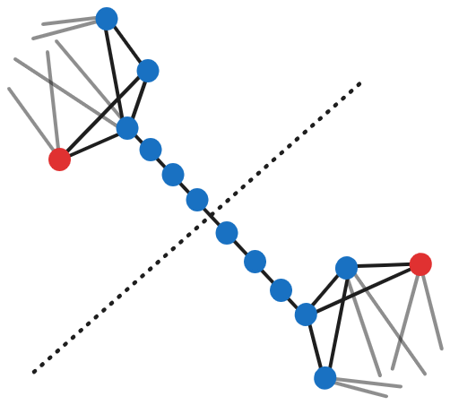
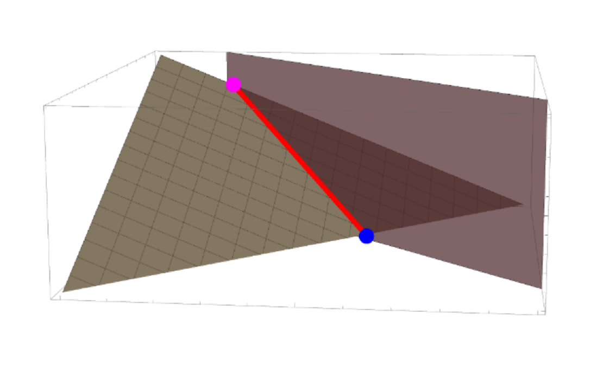
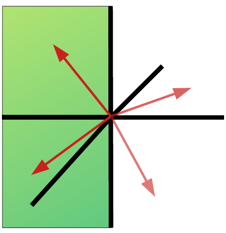

Jacob Bringewatt
Joint Center for Quantum Information and Computer Science (QuICS)
Joint Quantum Institute (JQI)
University of Maryland
College Park, MD 20742
Office: ATL3303
E-Mail: jbringew (at) umd.edu

|
Jacob Bringewatt
Joint Center for Quantum Information and Computer Science (QuICS) Office: ATL3303 E-Mail: jbringew (at) umd.edu |
|
|
| |
I am a Ph.D. candidate in theoretical physics at the University of Maryland, College Park. I study a variety of topics relating to quantum information and quantum computation.
I am affiliated with the Joint Center for Quantum Information and Computer Science (QuICS) and the Joint Quantum Institute (JQI) at the University of Maryland, where I am fortunate to be advised by Alexey Gorshkov. I have also had the opportunity to work extensively with Michael Jarret and Zohreh Davoudi, as well as many postdocs, fellow graduate students, and undergraduates.
I received my bachelor's degree in physics also from the University of Maryland, where I was a Banneker/Key scholar. I had excellent undergraduate research advisors in William Dorland and Stephen Jordan.
My research interests span many aspects of quantum information and quantum computing. Current topics of study include analog quantum computation, quantum metrology, and quantum simulation.
Also see my Google Scholar profile. * denotes equal contribution.
|
|
"Randomized measurement protocols for lattice gauge theories." |
J Bringewatt, J Kunjummen, N Mueller Preprint. (2023), [arXiv:2303.15519]

|
"On the stability of solutions to Schrodinger's equation short of the adiabatic limit." |
J Bringewatt*, Michael Jarret*, T C Mooney* Preprint. (2023), [arXiv:2303.13478]

|
"Minimum entanglement protocols for function estimation." |
A Ehrenberg*, J Bringewatt*, A V Gorshkov Preprint. (2022), [arXiv:2110.07613] | |
|
|

"Parallelization techniques for quantum simulation of fermionic systems." |
J Bringewatt, Z Davoudi Quantum 7, 975 (2023), [arXiv:2207.12470]
|
"Lower bounds on quantum annealing times." |
L P Garcia-Pintos, L T Brady, J Bringewatt, Y-K Liu. Phys. Rev. Lett. 130, 140601 (2023), [arXiv:2210.15687] | |
|
|

"Lefschetz thimble quantum Monte Carlo for spin systems." |
T C Mooney, J Bringewatt, N C Warrington L T Brady Phys. Rev. B 106, 214416 (2022), [arXiv:2110.10699]

|
"Simultaneous stoquasticity." |
J Bringewatt, L T Brady Phys. Rev. A 105, 062601 (2022), [arXiv:2202.08863] | |
|
|
"Protocols for estimating multiple functions with quantum sensor networks: geometry and performance." |
J Bringewatt, I Boettcher, P Niroula, P Bienias, A V Gorshkov Phys. Rev. Research 3, 033011 (2021), [arXiv:2104.09540]
|

"Optimal measurement of field properties with quantum sensor networks." |
T Qian, J Bringewatt, I Boettcher, P Bienias, A V Gorshkov Phys. Rev. A (Letter) 103, L030601 (2021), [arXiv:2011.01259]
|

"Confronting lattice parton distributions with global QCD analysis." |
J Bringewatt, N Sato, W Melnitchouk, J Qiu, F Steffens, M Constantinou Phys. Rev. D. 103, 016003 (2021), [arXiv:2010.00548] | |
|
|
"Effective gaps are not effective: quasipolynomial classical simulation of obstructed stoquastic Hamiltonians." |
J Bringewatt*, M Jarret* Phys. Rev. Lett. 125, 170504 (2020), [arXiv:2004.08681] | |
|
|

"Polynomial time algorithms for estimating spectra of adiabatic Hamiltonians." |
J Bringewatt, W Dorland, SP Jordan Phys. Rev. A 100 (3), 032336 (2019), [arXiv:1905.07461] Editors' Suggestion. | |
|
|

"Diffusion Monte Carlo approach versus adiabatic computation for local Hamiltonians." |
J Bringewatt, W Dorland, SP Jordan, A Mink Phys. Rev. A 97 (2), 022323 (2018), [arXiv:1709.03971]
|
"Study of radon reduction in gases for rare event search experiments." |
K Pushkin, C Akerlof, D Anbajagane, J Armstrong, M Arthurs, J Bringewatt, T Edberg, C Hall, M Lei, R Raymond, M Reh, D Saini, A Sander, J Schaefer, D Seymour, N Swanson, Y Wang, W Lorenzon Nucl. Instrum. Methods Phys. Res., Sect. A 903, 267-276 (2018), [arXiv:1805.11306] | |
I have mentored the following students for research projects:
And the following students as part of the GRAD-MAP Winter Workshop program at University of Maryland:
I also wrote a packet developing the mathematical skills needed to understand the basics of quantum computing. It was created for the UMD Girls Talk Math program.
Figuring out how to explain my research in non-technical terms is both an enjoyable challenge and, I think, an important part of being a scientist. While the majority of my time is spent communicating with other physicists, I enjoy the process of trying to distill my research to the big ideas for a broader audience.
In particular, I wrote an essay called Spherical Cows which explains my work on toy models for adiabatic quantum computing for a general audience (see here for technical paper). It won the DOE Computational Science Graduate Fellowship Communicate Your Science contest.
I was also one of four winners of the campus-level Three Minute Thesis contest at the University of Maryland in 2022. That talk can be seen as either a live version or as a professionally recorded video version.
I also volunteer for the Skype a Scientist program where I get to chat about physics with students from elementary school to high school. Sometimes I get to answer fun questions like "What happens when you put a magnet in lava?"